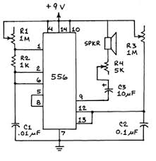

What is the Atari Punk Console?
The Atari Punk Console is a funny device that uses the 555 microchip, some capacitors, transistors, resistors and potentiometers to create a sound that resembles retro video game console music or sound effects. It was created by Forrest Mims III, and the 555 microchip that is used was made by Hans Camenzind. I discovered this project thanks to Make: magazine when I watched a video by Collin’s Lab.
How is it Made?
To make the console, you will need:
- 9V Battery
- 9V Battery Clip
- 556 Timer Chip (You can also use two 555 timers as well)
- 8 Ohm Speaker
- 1K Ohm Resistor
- (2) 1M Ohm Variable Resistor (Potentiometer)
- 5K Ohm Variable Resistor (Potentiometer)
- 0.01 uF Capacitor
- 0.1 uF Capacitor
- 10 uF capacitor
Using those parts, you will have to follow this diagram:
As you can see, the design is pretty simple and so is the actual process if you follow the diagram. If you wanted to go further with this design, you could even replace the potentiometers (knobs) with pressure sensors, light sensors, infrared sensors, and more. Using the light sensor, you would be able to create the same noises without even touching the device, but just by moving your hand over it. With a pressure sensor, you would be able to control the console by pressing lightly to get a certain sound, and press harder to make it adjust smoothly. You can also use different kinds of speakers, for example, if you wanted the sounds to have a quality that sounds scratchy and kind of glitchy, you would want a less powerful and smaller speaker. If you wanted to have a more bass sound, you can plug it into a bass boosted speaker.
Conclusion
During this project I have learned a lot about schematic elements and electronic components. I also discovered the Manhattan Style of building electronic projects. This was a unique experience for me and I want to try building more complex projects.